For this case study I wanted to design an hypothetical app that helps solving an everyday problem. Also I wanted to experiment with AI tools AI as assistance throughout the entire UX design process.
The problem that inspired this project is related the problems of everyday household shopping — specifically when a person makes the shopping list so that another person does the actual shopping. I wanted to adress the misunderstandings can lead to mistakes and frustration.
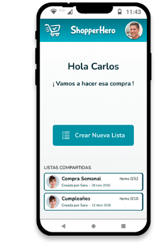
Type of Project
Shopping List App
Platforms
iOS, Android
Goal
Create an easy to use app that helps with everyday shopping tasks
The ultimate goal of the app I am trying to design is to make collaborative shopping simple. When a list is created and shared in order to make the shopping on site, I want give a tool that grants conection and understanding between the people involved.
I want to avoid situations as the ones described in the following comic strip:
Eva writes and sends a shopping list to Bryan, who is heading to the store to do the shopping.
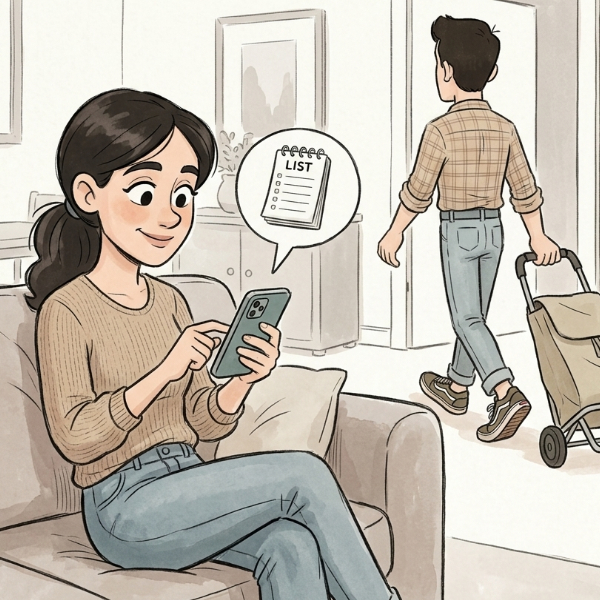
At the store, Bryan checks the list.
Some items are unclear and he needs feedback from Eva.
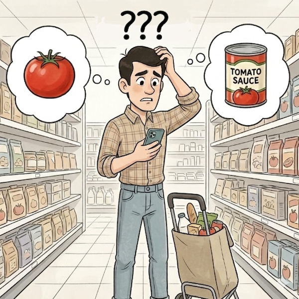
Text messages and shopping list gets mixed.
Connection gets lost, he must make a decision.
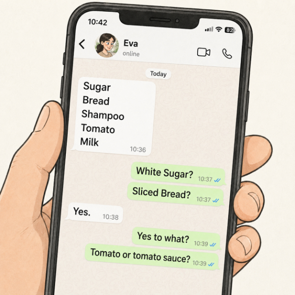
Bryan arrives home to find that he was wrong about some of the items he bought. This frustrates Eva.
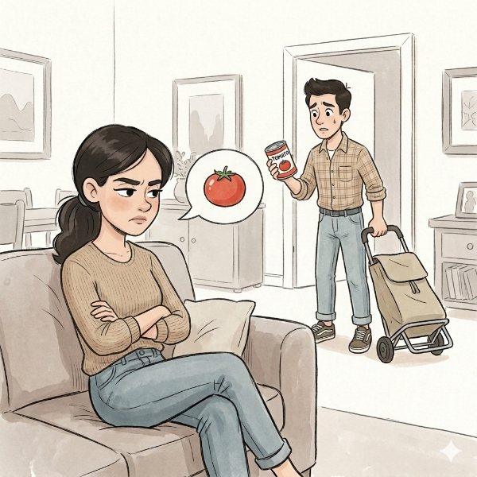
USER RESEARCH AI TEAM
Aware that similar apps already exist in the market, I wanted to start my research by analyzing competitors' strengths and weaknesses, along with their tendencies and patterns.
To get the job done, I will reied on the following AI tools for research, assigning different tasks to each:
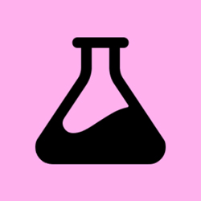
Google Stitch
Behaviour TendenciesShared Pain Points in AppsPatterns of Use
Perplexity
Competitors AnalysisStrengths and WeaknessesDocument 4 Competitors
Synthesize Previous AI OutputExtract Pain PointsPatterns of Use
From the vast output that came from NotebookLM at the end of the process, there were parts of the output I should not consider as were far from mi original scope, like enabling online shopping or having several persons picking items at the store.
Presence Indicator
Online buying
Lists based on recipes
Gamification
I wanted to stick to the information that was most useful for my vision of the app. Instead of ending up with a super-advanced app, I wanted to keep a very basic set of features to make sure the result was easy to use and straight-forward.
KEY OPPORTUNITIES
The "biggest UX gap" identified in competitive research is the ability to have a conversation inside the list.
By focusing on per-item comments, aisle grouping, and real-time sync, I can build the "single source of truth" that users currently lack.
My ultimate goal is not just making a list, is to reduce the "exhausting" mental load of household management.
DEFINE
DEFINING PERSONAS AND PROBLEMS
For the synthesis phase I followed a sequential AI-assisted workflow where the output of each tool became the input for the next. This chained approach ensured every artefact remained traceable back to real research data.
NotebookLM
Output from Research Phase
Claude
Create User Personas
Claude User Personas
Persona A - Sara García
Age
41 · Madrid · Marketing Manager
Profile
Plans the weekly grocery list but her partner is the one who goes to the store.
Goals
Build clear lists that need no clarification; delegate without losing control.
Frustrations
Gets constant calls when items on the list are too vague.
Quote
“I try my best with the list… and he still calls me from the store.”
Persona B - Carlos Martínez
Age
43 · Madrid · Freelance designer
Profile
The one who shops, never the one who plans.
Goals
Get things done without calling, following a logical route when shopping.
Frustrations
Vague items, duplicate buys, message chaos.
Quote
“Some apps feel like project management software for buying bananas.”
Claude
Empathy Maps from User Personas
Claude Empathy Maps
SARA "The Planner"
CARLOS "The Executor"
THINK & FEEL
"I know exactly what I need, but I can't be sure he'll understand"
"Even when I'm not at the supermarket, I'm mentally shopping"
"I hate having to keep my phone close in case he calls from market"
"I have the list but I know at some point I'll get stuck in front of a shelf"
"I don't want to call again, but if I don't I risk bringing the wrong thing"
"I'm taking twice as long as I should because the list has no logical order"
SEE
The list in WhatsApp, mixed in with memes and conversations
Her partner sending blurry photos of shelves from the supermarket
Apps with tutorials and onboardings that feel like learning a new software
A chronological list that doesn't match the layout of the supermarket
The dairy aisle with ten varieties of milk and an item that just says "milk"
Other shoppers staring at their phones just like him, stuck in front of a shelf
HEAR
"Plain yogurt or Greek?" — a call from the supermarket, every week
"They didn't have that brand, should I get another?" — and she has to decide in 10 seconds
Friends saying "I use Bring! and it's great" but when she tries it, it doesn't convince her
His kids asking for specific brands that aren't specified on the list
"Wasn't it on the list?" — when he gets home without something that was "obvious"
"Mercadona doesn't have it, try Lidl" — information that reaches him when he's already at the checkout
SAY & DO
Keeps her phone nearby while doing other things, in case she gets a call from him
Writes the list in bursts, as things come to mind, with no particular order
Adds items to WhatsApp because "it's the quickest thing"
Walks down the same aisle twice because the list doesn't follow the store's layout
Stops the trolley mid-aisle to write a message or take a photo of the shelf
Calls even when he doesn't want to, because guessing has consequences
PAINS
The list never has enough context for whoever is executing it
She still carries the mental load even when her partner is the one physically shopping
She leaves the supermarket (without having gone) already suspecting something will be missing
He receives items with no brand or context — he has to guess
Communication happens outside the list, in WhatsApp, mixed in with everything else
He shops at multiple supermarkets but the list doesn't indicate where to get each thing
GAINS
Know in real time that the list is being used correctly
Trust that what's on the list is what will arrive home
No calls during the shop — doubts get resolved on their own or in context
Adding something is as quick as sending a WhatsApp message
Know exactly what to buy without having to interpret or call
Resolve a doubt directly on the item, without jumping to WhatsApp
A list that follows the supermarket's layout, or adapts to whichever store he's in
Leave the store with the certainty that the list is complete
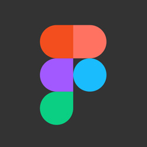
Figjam
Sort an Affinity Map
Figjam Affinity Maps
#1 Communication Fragmentation and Lost Information
Communication lives outside the list
Shelf photos and voice notes lost in chat
Info split across list WhatsApp and memory
No single source of truth
#2 Real-time Collaboration Visibility
Presence indicator: who's viewing the list now
In progress indicator: someone's already grabbing this
No visibility of whether list is being checked
No awareness of who else is buying what
#3 In-context Collaboration Needs
Per-item comments inside the list
Clarifications arrive mid-aisle too late
Attach photos directly to items not in chat
Resolve doubts in context without leaving the app
#4 Inefficient Store Navigation
List order is chronological not store-logical
Shopper zigzags across already-visited aisles
List doesn't adapt to different stores
#5 Lack of Item Detail and Context
No brand size or variant context
Items too vague: milk / snacks / cheese
Smart autocomplete with brand or variant context
#6 Store-specific Optimization Failures
Auto-categorisation by aisle or store zone
Store mode: one-hand UI optimised for cart navigation
Multi-store support per item
#7 App Rigidity and Abandonment
Dedicated apps feel too rigid
Users revert to WhatsApp or paper
#8 Duplicate Purchases and Failures
Duplicates happen on basics: oil milk pasta
Planner suspects something's missing before shopper arrives home
#9 Relationship Tension
Uncertainty doesn't end at checkout
Small misunderstandings cause flatmate tension
#10 Mental Load
Planner stays on-call during the whole shop
Mental load persists even off-site
Once I broke down and iterptet the AI output related to the users and their problems, I specified two user personas, being the users at each end of the shopping collaboration.
Sara García "The Planner"
Age
41 · Madrid · Marketing Manager
Profile
Plans the weekly grocery list but her partner is the one who goes to the store.
Goals
Build clear lists that need no clarification; delegate without losing control.
Frustrations
Gets constant calls when items on the list are too vague.
Quote
“I try my best with the list… and he still calls me from the store.”
Carlos Martínez "The Executer"
Age
43 · Madrid · Freelance designer
Profile
The one who shops, never the one who plans.
Goals
Get things done without calling, following a logical route when shopping.
Frustrations
Vague items, duplicate buys, message chaos.
Quote
“Some apps feel like project management software for buying bananas.”
HMW and JOB STORIES
Taking the 10 affinity clusters I already had as input, I prompted Claude to reframe each pain point as a How Might We question. The result was 10 actionable statements that directly informed the next step.
Rather than writing generic user stories, I used Claude to generate Job Stories in the When / I want / So I can format, one set for Sara and one for Carlos. This format focuses on motivation and context rather than role and feature, which produced more honest and specific statements about what each persona actually needs the product to do for them.
Figjam
Affinity Map
Claude
Generate HMW Statements
Claude HMW Statements
#1 Communication Fragmentation and Lost Information
How might we ensure that all relevant shopping information is available in a single place, accessible to everyone involved?
How might we prevent important context — photos, voice notes, comments — from getting lost or scattered across different channels?
#2 Real-time Collaboration Visibility
How might we give shoppers a sense of co-presence, so they know others are actively engaged with the list in real time?
How might we make each person's individual progress within a shared shopping trip visible, without anyone having to ask?
#3 In-context Collaboration Needs
How might we allow questions about a product to be resolved at exactly the right moment, without interrupting the shopping flow?
How might we remove the need to leave the list to communicate, keeping all conversation tied directly to the relevant item?
#4 Inefficient Store Navigation
How might we organise list items in a way that makes moving through the supermarket more fluid and logical?
How might we adapt how the list is presented to match the shopper's actual physical context in each store?
#5 Lack of Item Detail and Context
How might we help whoever adds an item to include enough context — brand, size, variant — so the shopper doesn't have to guess?
#6 Store-specific Optimization Failures
How might we make the list automatically adapt to the layout of each store, reducing the effort needed to organise it?
How might we optimise the list experience for one-handed use or movement within a store?
#7 App rigidity and user abandonment
How might we make the app adapt to each user's pace and style, rather than imposing a rigid structure on them?
How might we reduce the initial friction of adoption so that using the app feels more natural than falling back on informal alternatives?
#8 Duplicate Purchases and Failures
How might we help group members spot in time when something has already been bought or is already being picked up?
How might we give the planner a reliable view of the actual shopping status without depending on confirmation messages?
#9 Relationship Tension
How might we reduce ambiguity in shopping expectations so that small differences don't create friction in people's day-to-day lives?
How might we give all household members confidence that the shopping has been completed as agreed?
#10 Mental Load
How might we free the planner from having to stay on call throughout the entire shop, once the list has been set?
How might we distribute decision-making so that the person not in the store doesn't need to be consulted in real time?
Claude
Create Job Stories
Claude Job Stories
Sara — The Planner
HMW: Make the list feel alive so planners know it's being actively used
When I've handed off the shopping to Carlos and I'm in the middle of my own tasks, I want to have a sense that the shopping is actually happening and progressing, so I can stop mentally tracking it and focus on what I'm doing.
HMW: Free the planner from having to stay reachable during the entire shopping trip
When Carlos is at the supermarket and I'm unavailable — in a meeting, with the kids, or just offline — I want the list itself to answer the questions he would normally ask me, so I can be truly off-duty without things falling apart.
HMW: Shift the mental load of shopping from a person to the tool itself
When I'm building the list throughout the week by remembering things at random moments, I want a single place where my scattered notes, reminders and thoughts become an organised, ready-to-use list automatically, so I can stop being the only one holding the full picture in my head.
HMW: Prevent important context from getting lost between different communication channels
When I've already explained something about an item — a brand preference, a quantity, a reason — in a voice note, a text message or out loud, I want that context to stay attached to the item itself, so I can stop repeating myself every single week.
Carlos — The Executor
HMW: Help shoppers move through the store in a logical order without extra effort
When I arrive at the supermarket with a list that was written at home in no particular order, I want the items to make sense in terms of where they actually are in the store, so I can move through the aisles once without backtracking or missing things.
HMW: Let collaborators resolve doubts about a specific item without leaving the list
When I'm standing in front of a shelf and I'm not sure if a product is the right one — wrong brand, different size, unfamiliar packaging — I want to find the answer right there on the item, so I can make the call without having to stop and message Sara and wait for her to reply.
HMW: Prevent two people from buying the same thing without having to coordinate explicitly
When someone else might be picking up a few items on their way home while I'm already at the supermarket, I want to know in real time what's already being handled, so I can avoid doubling up on things without us having to actively talk it through.
HMW: Make a structured list feel as fast and frictionless as sending a WhatsApp message
When I need to quickly add something I've just noticed we're out of, I want to do it in the same amount of effort it takes to send a text, so I can contribute to the list without it feeling like a chore or an interruption.
MoSCoW PRIORITIZATION
With the full set of HMW statements and design opportunities mapped, I used Notion AI to apply the MoSCoW prioritisation framework across all identified features. Each feature was categorised as Must, Should, Could or Won't, with a one-line justification tied back to the core user frustrations. This step translated the qualitative outputs of the synthesis phase into a structured, defensible scope for the product.
Claude
HMW Statements
Notion AI
MoSCoW Priorization
Notion AI MoSCoW Priotitization
Feature
MoSCoW
Justification
Related user frustration
1. Per-item comments inside the list
Must
Moves coordination and clarifying details into the exact item, reducing back-and-forth and preventing the executor from improvising mid-shop.
Communication happens outside the list; executor lacks context; planner carries mental load
2. Attach photos directly to items
Should
Photos add fast visual context (exact product/size/brand) and reduce interruptions, but comments can cover most needs without the extra effort.
Solves the "not store-logical order" problem directly by structuring the list in a way that matches how people move through a store.
List not organised in a store-logical order
8. Store mode: one-hand UI optimised for cart navigation
Should
Makes execution smoother and reduces friction compared to "rigid apps," but it doesn't by itself fix context gaps or duplicate buying.
Dedicated apps feel too rigid; executor improvises mid-shop
9. Multi-store support per item
Won't
Adds complexity and benefits only some scenarios, while the core pain is coordination and clarity for a single shared shop.
(Indirect/edge) mental load; list organisation
10. Resolve doubts in context without leaving the app
Must
Keeps clarification in the flow of shopping and inside the list, reducing fragmented channels and mid-shop interruptions.
Communication happens outside the list; executor improvises/interrupts mid-shop; planner carries mental load
Problem Statement:
How can I create an app that both allows adding items with precission but at the same time it is easy to use, keeping the users engaged and in perfect sync?
PAIN POINTS I WILL TARGET
Wrong Item Problem
Users frequently buy the wrong item because the list is vague
Clarification Loop
Shoppers must constantly ask because they lack context
In-Store "Zigzag"
Chaotic shopping path because the list was unorganized
STRATEGIC INSIGHTS
Lightweight Micro-Chat
Ensure the item comments are as fast and easy to us
AI Thumbnails
Using AI to generate an image thumbnail for items automatically
Intelligent Item Grouping
Items will be listed under the store section where they belong
IDEATION
By the time I reached the ideation phase, I already had a close idea of what I was after regarding the app branding and flavour. But I wanted to generate some ideas assisted by AI tools. My goal was going to be able too extract anything valuable from the AI output, and check with the generated flows if I was missign anything.
VISUAL IDENTITY
ChatGPT
App Name
ChatGPT App Names
Hero Theme
Collaborative
Modern App
Friendly
Smart
CartHero
ListHero
ShopQuest
VictoryCart
SharedCart
FamList
ShareBasket
GroupGrocer
Listly
Listo
Grocio
Bringr
PickUp
OopsWeNeed
QuickBasket
Needful
RelayList
Flowcart
LiveList
MergeList
Gemini
App Logo
Gemini Logo Exploration
Claude
Create User Flows
Claude User Flows
Happy Path Flow
Item Message Flow
Final Logo Version
Once I had some ideas to play with, I decided to create something manually using the AI output as inspiration. I liked the idea of the shopping bag, but a trolley was going to be more suitable. The typography from the initial AI versions was a bit off, so I had to keep on prompting to reach something closer to my idea.
UI EXPLORATION
When it was tome to start generating some screens, I generated a prompt to be fed to different AIs.
Stitch
0dev
Uizard
Explore different UI Ideas
UI Exploration
Google Stitch Screens
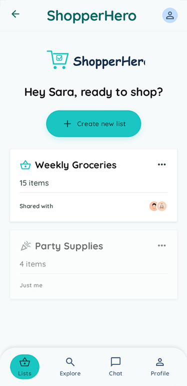
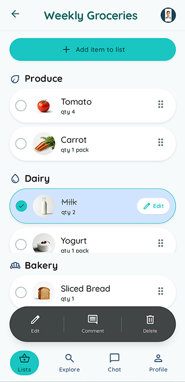
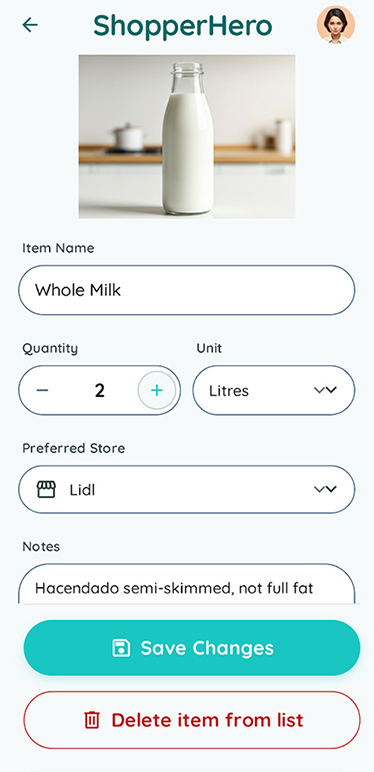
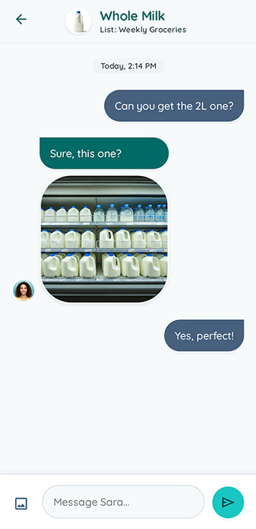
0dev Screens
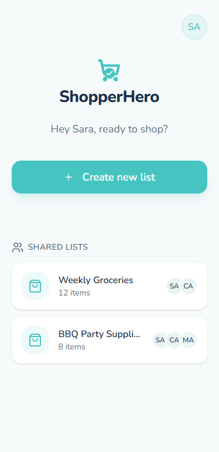
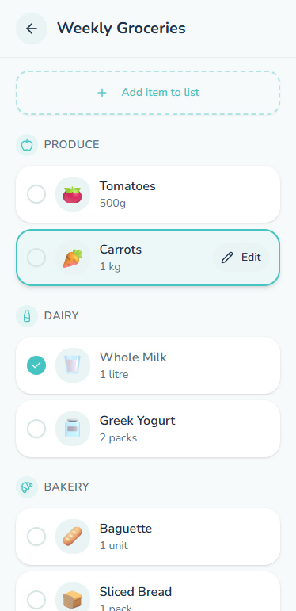
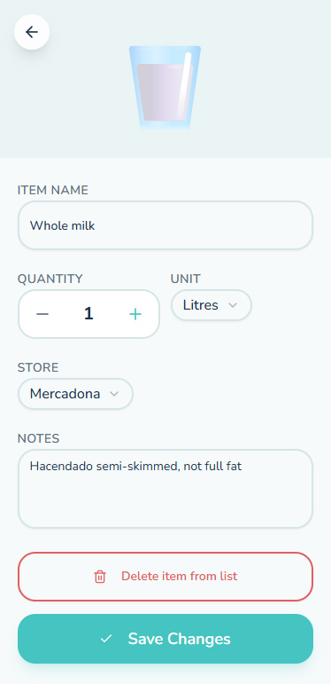
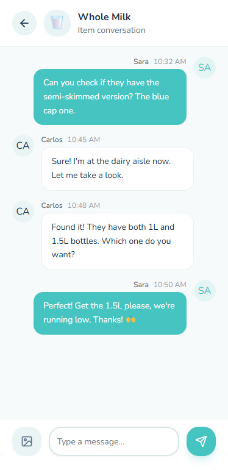
Uizard Screens
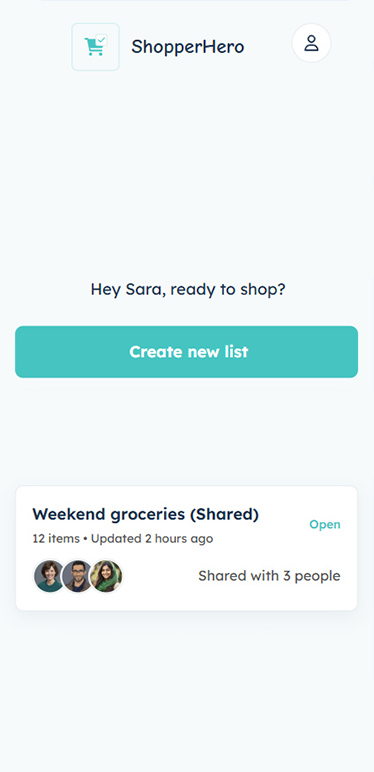
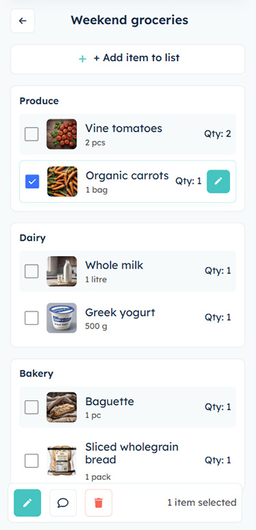
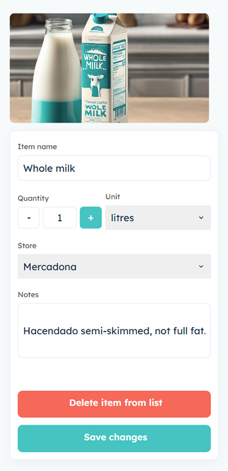
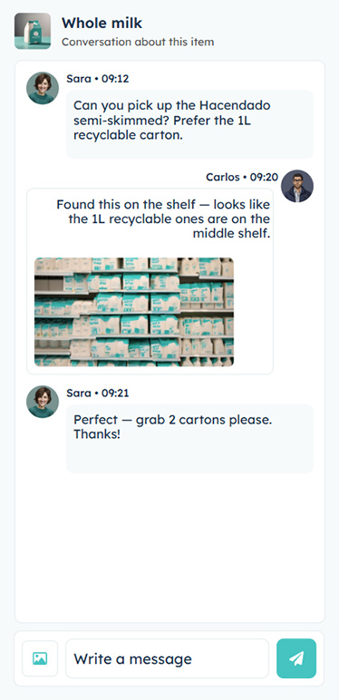
The results included from redundancies to glitches, contrast issues and inconsistancies, and elements that were added just because somehow are usually within a phone app. But it also did show some good practices to reproduce and some elements that I did not consider but could be great additions, like a progress bar for the shopping list.
Taking all the usefull bits of the AI screens, I proceeded to create the screens with FIGMA.
PROTOTYPING
DESIGN SYSTEM
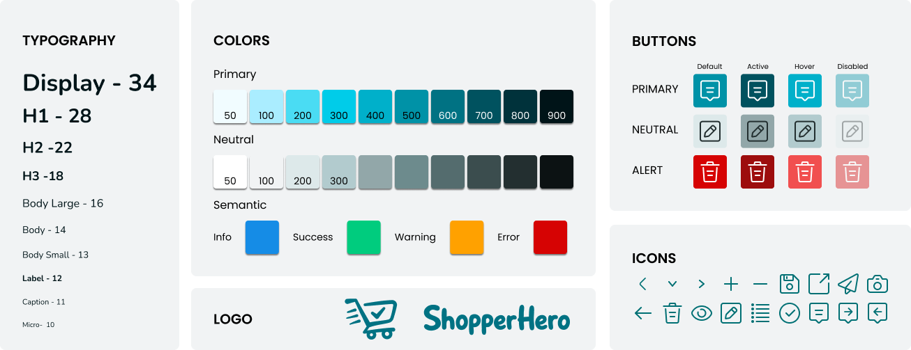
INTELLIGENT SHORTING
AI will detect where in a shop the product belongs to, and sort the list items by areas.
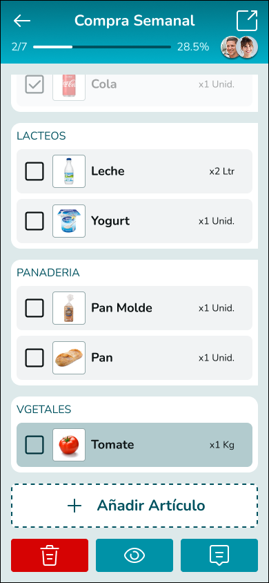
If a shop or supermarket is specified for the items, they will also get grouped by stores.
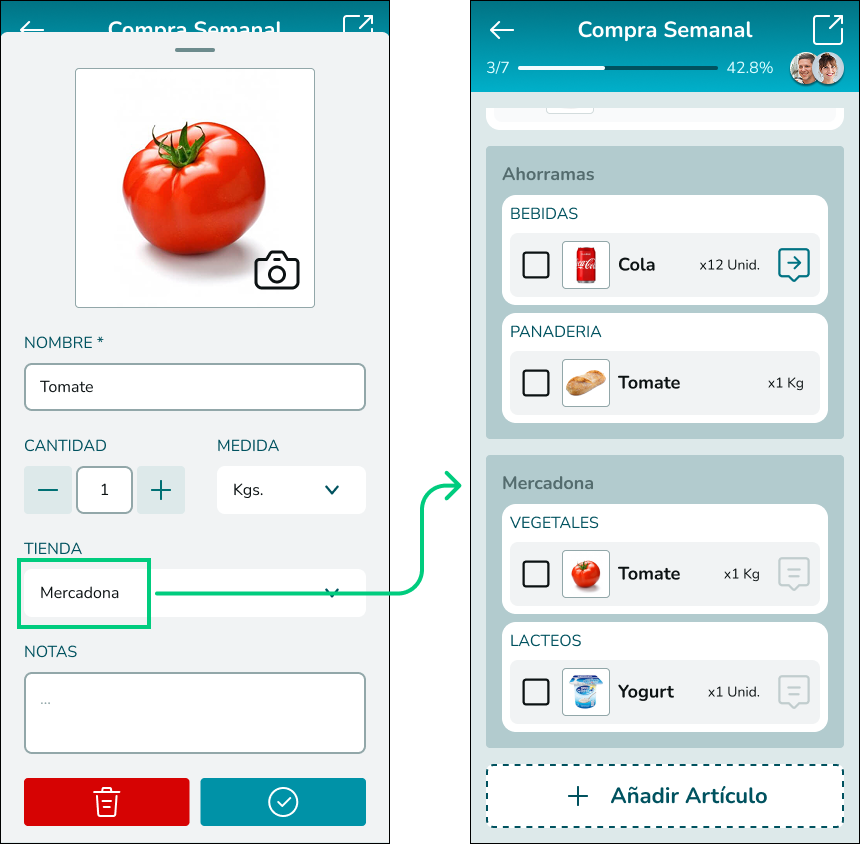
PER-ITEM CHAT
When an element of the list is selected, a bottom toolbar will show a speech bubble icon that will trigger a chat for the selected item:
Building ShopperHero with AI assistance taught me that the most important design decisions were not made by the AI — they were made in response to it.
Throughout this project I used synthetic user data as deliberate methodological choice for a portfolio project, but it is something I would avoid in a real design context. Synthetic data can surface useful patterns, but it cannot replace the contradictions, hesitations and unexpected insights that come from talking to real people.
What this process confirmed is that AI tools are most valuable when you already know what question you are trying to answer. Used with a clear research foundation, they compress weeks of work into hours — leaving more time for the decisions that actually require human judgment.